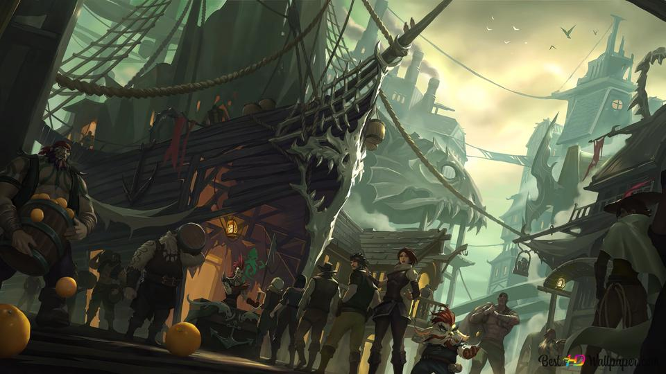
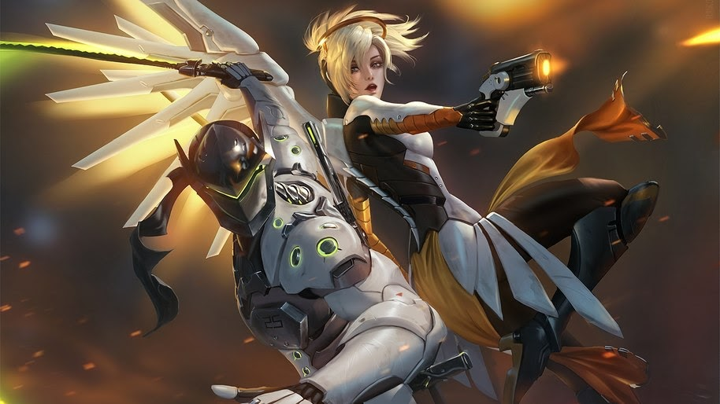

League of Legends
Um popular jogo multiplayer online de batalha arena, desenvolvido pela Riot Games. Lançado em 2009, LoL destaca-se por sua jogabilidade estratégica, onde equipes de jogadores enfrentam-se em mapas com o objetivo de destruir a base inimiga. Com uma grande variedade de campeões e constantes atualizações, LoL tornou-se um dos jogos mais jogados do mundo, com uma enorme base de fãs e uma vibrante cena competitiva global.
Saiba mais

Fortnite
Desenvolvido pela Epic Games, é um jogo battle royale que cativou milhões de jogadores globalmente. Com gráficos vibrantes e mecânicas únicas, os participantes lutam pela sobrevivência em uma ilha constantemente diminuindo. Além do modo battle royale, o jogo apresenta modos criativos e eventos sazonais, mantendo-se como uma referência no cenário dos jogos online.
Saiba mais

Sea of Thieves
Desenvolvido pela Rare, é um envolvente jogo de aventura online que transporta os jogadores para um mundo pirata vibrante. Navegue pelos mares em busca de tesouros, enfrentando desafios e interagindo com outros jogadores em um ambiente compartilhado. A experiência cooperativa, os gráficos cativantes e os eventos dinâmicos fazem de Sea of Thieves uma jornada emocionante para os amantes de aventuras marítimas.
Saiba mais

Valorant
Também desenvolvido pela Riot Games, é um FPS tático lançado em 2020. Destaca-se pela combinação de mecânicas precisas de tiro e habilidades especiais de personagens. Com um foco estratégico e competições acirradas, o jogo conquistou uma base global de jogadores.
Saiba mais

Overwatch
Em uma batalha virtual, equipes de seis jogadores competem, cada um escolhendo um herói com três funções principais: dano, tanque e suporte. As funções variam entre ataque, resistência e apoio à equipe. Com modos de jogo diversos, os níveis de dificuldade de 1 a 5 oferecem uma progressão desde o básico até o avançado.
Saiba mais
.jpg)
Tom Clancy's Rainbow Six: Siege
inspirado nos livros de Tom Clancy, é um jogo tático onde jogadores assumem papéis em equipes de Ataque e Defesa. A missão varia entre desativar bombas e proteger objetivos, exigindo estratégia na formação de equipes e conhecimento dos mapas. O jogo destaca-se pela abordagem realista e intensidade tática nas batalhas contra o terrorismo.
Saiba mais